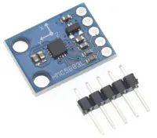
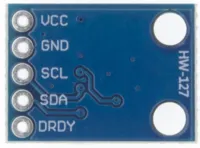
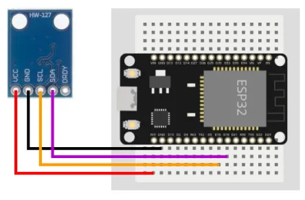
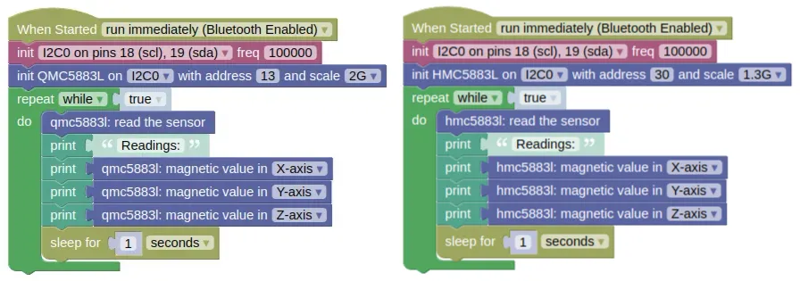
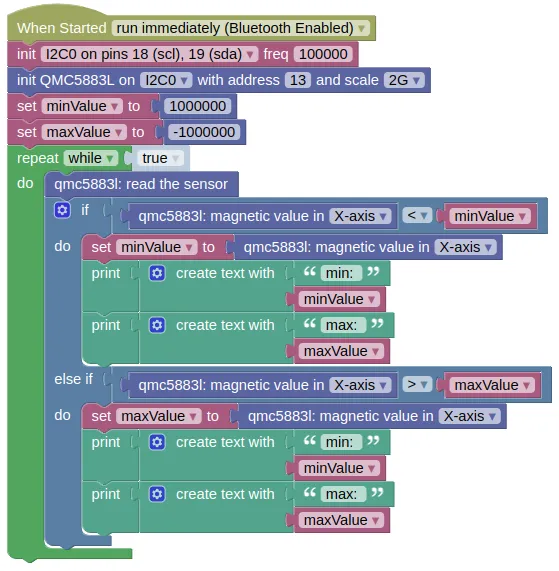
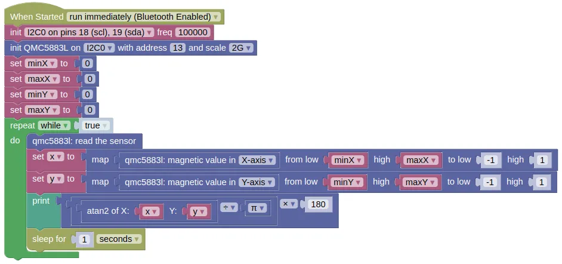

Magnetic Sensor (QMC5883L, HMC5883L)

The QMC5883L and HMC5883L are 3-axis magnetic sensors often used as a magnetic compass for navigation purposes. Both models works in the same way, but each require their own extension.
Pins

| Pin | Description |
|---|---|
| VCC | Power for the sensor. Connect to 3V3. |
| GND | Ground pin. This should be connected to the GND pin on the ESP32. |
| SCL (Signal) | Serial Clock. This is used to communicate with the ESP32 using the I2C protocol (default pin 18). |
| SDA (Signal) | Serial Data. This is used to communicate with the ESP32 using the I2C protocol (default pin 19). |
| DRDY | Data Ready. We are not using this. Leave unconnected. |
Wiring

Code
This code will print the sensor readings for all 3 axis.
There are two versions provided; for the QMC5883L and HMC5883L. Use the code suitable for your sensor.
Blocks

Python
QMC5883L
import machine
import qmc5883l
import time
i2c0 = machine.I2C(0, freq=100000)
qmc5883l_device = qmc5883l.QMC5883L(i2c0, addr=13, scale=qmc5883l.SCALE_2G)
while True:
qmc5883l_device.read()
print('Readings:')
print(qmc5883l_device.get_x())
print(qmc5883l_device.get_y())
print(qmc5883l_device.get_z())
time.sleep(1)
HMC5883L
import machine
import hmc5883l
import time
i2c0 = machine.I2C(0, freq=100000)
hmc5883l_device = hmc5883l.HMC5883L(i2c0, addr=30, scale=hmc5883l.SCALE_1300G)
while True:
hmc5883l_device.read()
print('Readings:')
print(hmc5883l_device.get_x())
print(hmc5883l_device.get_y())
print(hmc5883l_device.get_z())
time.sleep(1)
Results
You should see the sensor readings printed in the monitor.
As you turn the sensor, you should see the readings change. You should also see changes if you bring a magnetic object or (...to a lesser extent) large metal object close to the sensor.
Magnetic Compass
To use these magnetic sensors as a compass, you must perform calibration.
This can be rather involved if you need high accuracy (...especially in the presence of soft iron distortion), but here we show a simple method which is good enough most of the time.
The following steps assumes that the Z-axis is facing up. Adjust the code if you have a different axis facing up; the axis facing up or down need not be calibrated.
Steps (Calibration):
-
Mount the sensor in its intended position (eg. on your robot). This position should be far from any magnetically permeable materials (eg. iron).
-
Transfer the following code on to your device and run it.

-
Slowly rotate your device (ie. if the sensor is mounted on a robot, rotate the entire robot and not just the sensor). As you rotate, you should see the minimum and maximum sensor readings printed in the monitor. Keep rotating until no new values are printed and note down the last values.
-
Repeat the same test, but with the axis changed to 'Y-axis' in the code. Note down the last values.
Steps (Usage as Compass)
-
Write the following code in IoTy.

-
In the
set minX / maxX / minY / maxYblocks, put in the values that you have obtained during calibration. -
Transfer the following code on to your device and run it.
You should see the compass direction printed in the monitor. The values will range from -180 to 180; if you need it to be from 0 to 360, add 360 if the angle is less than 0.
class QMC5883L / class HMC5883L - control QMC5883L and HMC5883L magnetic sensors
Constructors
qmc5883l.QMC5883L(i2c, addr=13, scale=SCALE_2G)
Creates an QMC5883L object.
The arguments are:
-
i2cAn i2c object. -
addrThe i2c address of the QMC5883L. By default, this should be 13. -
scaleThe maximum value readable by the sensor, which can be one of the following:-
qmc5883l.SCALE_2GMax of 2 gauss. This is enough for a compass. -
qmc5883l.SCALE_8GMax of 8 gauss.
-
Returns a QMC5883L object.
hmc5883l.HMC5883L(i2c, addr=30, scale=SCALE_1300G)
Creates an HMC5883L object.
The arguments are:
-
i2cAn i2c object. -
addrThe i2c address of the HMC5883L. By default, this should be 30. -
scaleThe maximum value readable by the sensor, which can be one of the following:-
hmc5883l.SCALE_880GMax of 0.88 gauss. -
hmc5883l.SCALE_1300GMax of 1.3 gauss. This is enough for a compass. -
hmc5883l.SCALE_1900GMax of 1.9 gauss. -
hmc5883l.SCALE_2500GMax of 2.5 gauss. -
hmc5883l.SCALE_4000GMax of 4.0 gauss. -
hmc5883l.SCALE_4700GMax of 4.7 gauss. -
hmc5883l.SCALE_5600GMax of 5.6 gauss. -
hmc5883l.SCALE_8100GMax of 8.1 gauss.
-
Returns a HMC5883L object.
Methods
QMC5883L.read() / HMC5883L.read()
Performs a reading. This will read all 3 axis values and store them.
Returns a list containing 3 integers representing the x, y, and z readings.
QMC5883L.get_x() / QMC5883L.get_y() / QMC5883L.get_z()
HMC5883L.get_x() / HMC5883L.get_y() / HMC5883L.get_z()
Gets the reading for the specified axis.
You must perform a read() first.
Returns an integer representing the reading for the axis
QMC5883L.get_all() / QMC5883L.get_all()
Gets the readings for all 3 axis.
You must perform a read() first.
The values returned by get_all() are the same as the values returned by the last read().
Returns a list containing 3 integers representing the x, y, and z readings.